Claude Code 51 万行源码全拆解：五大设计原则 + 九大核心模块
来源：微信公众号 归档日期：2026-04-07 抓取状态：成功 原文字符：30178｜配图：23 张
摘要速览
想深入理解 Claude Code 的内部架构——Agent Loop 怎么跑的、工具系统怎么设计的、权限怎么控制的、多 Agent 怎么协作的、System Prompt 怎么组装的？这篇基于泄露源码做了最完整的拆解。
核心内容
五条设计原则
- 工具即能力边界：Agent 能做什么完全由工具集决定，没有后门。新增能力 = 新增工具
- Fail-closed 安全默认：所有安全相关默认值最保守——工具默认不可并行、默认非只读、权限默认需确认
- Context Engineering > Prompt Engineering：不是写一段 prompt，而是每轮动态组装完整上下文——分段缓存、动态注入、多层压缩
- 可组合性：子 agent 复用主 agent 的 query() 函数，MCP 工具复用内部权限检查
- 编译时消除 > 运行时判断：Bun 的 feature() 宏在构建时移除未启用功能，bundle 中完全不存在
Agent Loop（系统心脏）
- 两层循环模型：QueryEngine 管会话（多轮状态、transcript 持久化），queryLoop 管单轮（API 调用、工具执行、错误恢复）。用 AsyncGenerator 连接——背压控制 + 自然取消语义 + 流式组合
- 消息预处理管线（从轻到重）：缓存过期 → token 计数 → 图片降采样 → 工具结果截断 → Context Collapse → AutoCompact。先做廉价本地操作，再做需要 API 调用的重操作
- AutoCompact 触发阈值：200k 上下文模型约在 167k tokens 时触发。有断路器——连续失败 3 次后停止重试（源码注释：1,279 个会话曾连续失败 50+ 次，每天浪费约 25 万次 API 调用）
- 流式工具执行器：API 流式接收期间，每收到一个 tool_use block 立即执行。并发安全工具组成"并行分区"，分区间串行、分区内并行
工具系统
- Tool 接口六大功能组：定义与发现、输入验证、权限检查、执行、并发控制、UI 渲染
- BashTool（18 个文件）：8 层安全检查——命令注入检测（25+ 种）、tree-sitter 解析 AST 对每个子命令独立权限检查、只读白名单精确到 flag 值类型、沙箱限制文件/网络路径
- FileEditTool 安全设计：old_string 必须唯一匹配 + 不能编辑未读过的文件（readFileState 缓存跟踪）
权限体系
- 六种权限模式（从不信任到完全信任）：plan → default → acceptEdits → auto → bypassPermissions → dontAsk
- 硬编码安全底线：.git/、.claude/、.vscode/、shell 配置文件的写入即使 bypass 模式也必须确认
- 远程熔断：Anthropic 可通过 Statsig 远程降级所有用户的 bypass 模式
- 规则遮蔽检测：当用户配置矛盾规则时自动警告（如 deny Bash + allow Bash(ls) 后者永远不生效）
多 Agent 协作（三层架构）
- Subagent：最轻量，父 agent 派生子 agent 做简单委派
- Team/Swarm：成员间可互相通信，通过文件系统邮箱（
~/.claude/teams/<teamName>/mailbox/） - Coordinator：纯编排者，自己不操作文件，只有约 6 个工具。核心原则："永远不要委派理解"——必须综合研究结果后给 worker 精确指令
- Fork Subagent：继承父 agent 完整对话历史，最大化 prompt cache 命中率。多个 fork 并行时共享同一 cache 前缀
- Explore agent 优化：用最便宜的 Haiku 模型、省略 CLAUDE.md 和 gitStatus，注释称每周节省 5-15 Gtok（3400 万次调用）
System Prompt 工程
- 分段缓存：System prompt 是 string[] 数组，DYNAMIC_BOUNDARY 标记将其分为静态区域（全局缓存，跨用户共享）和动态区域
- 四层压缩策略（从轻到重）：工具结果截断 → Context Collapse（渐进式按重要性折叠）→ AutoCompact（全量摘要）→ 消息丢弃
- 压缩反遗忘设计：要求保留"所有用户消息"——防止压缩后丢失"用户说不要用 Redux"这类关键反馈
- DANGEROUS_uncachedSystemPromptSection：函数名刻意带 DANGEROUS 前缀，强制开发者每次使用时解释为什么要破坏缓存
可执行启发
（待补充）
我的想法
（待补充）
- 这篇是目前看到的最完整的 Claude Code 架构拆解，建议反复读。特别是"Context Engineering > Prompt Engineering"这个理念，我们的 Agent 体系可以朝这个方向升级
- Coordinator 的"永远不要委派理解"原则，和我们董事长"只路由不执行"的设计有相似之处，但 Claude Code 走得更远——它要求 Coordinator 在分发前必须综合信息。我们的董事长是否也应该做更多的信息整合？
为什么有用
- 我们的 OpenCode Agent 体系（董事长→总经理架构）可以直接借鉴的设计：
- "工具即能力边界"原则——总经理只能用自己职责范围的工具
- Fail-closed 安全默认——新 Agent 默认最保守权限
- Coordinator 的"永远不要委派理解"——董事长分发任务时必须给足上下文
- Context Engineering 的思路比单纯写 prompt 高一个维度，值得在 AGENTS.md 和 Agent 的 System Prompt 设计中采纳
- Explore agent 的 token 优化策略（省略不需要的上下文）可以应用到我们的子 Agent 调用中
适用 / 不适用场景
- 适用：想深入理解 AI 编码 Agent 架构的开发者、正在搭建自己的 Agent 系统需要参考架构设计的人
- 不适用：只想用 Claude Code 不关心内部实现的普通用户
原文沉淀
目录
- 一、项目全景与设计哲学
- 1.1 代码规模
- 1.2 架构鸟瞰
- 1.3 五条设计原则
- 二、Agent Loop：系统的心脏
- 2.1 两层循环模型
- 1. 背压：调用方按需消费，不会被消息洪水淹没
- 2.2 queryLoop 的状态机设计
- 2.3 消息预处理管线：从轻到重
- 2.4 流式工具执行器：并发控制的精髓
- 2.5 消息扣留机制：保护 SDK 消费者
- 2. media-size 错误：尝试剥离过大的图片后重试
- 3. max_output_tokens 错误：等待恢复循环决定是否能继续
- 2.6 Token Budget：让模型"做完"复杂任务
- 三、工具系统：Agent 的手与脚
- 3.1 Tool 接口：六个功能组
- 3.2 ToolUseContext：工具的运行时环境
- 3.3 工具注册：三种加载策略
- 3.4 BashTool 深度解析：18 个文件的安全堡垒
- 3.5 FileEditTool：搜索-替换的安全设计
- 四、权限体系：系统的免疫系统
- 4.1 权限模式：信任的刻度盘
- 4.2 权限判断主流程：多层评估管线
- 4.3 规则系统：精细化控制
- 4.4 权限在多 Agent 场景下的传递
- 五、多 Agent 协作：蜂群智能
- 5.1 三层协作架构
- 5.2 AgentTool：统一入口的路由设计
- 5.3 Agent 定义体系：三层联合类型
- 5.4 内置 Agent 类型的设计哲学
- 5.5 子 agent 的执行引擎
- 5.6 Fork Subagent：Prompt Cache 优化的极致
- 5.7 Team/Swarm：两种后端的权衡
- 5.8 进程内 Teammate 运行器：最复杂的协作引擎
- 4. 降级路径：通过邮箱发送权限请求，轮询等待响应
- 5.9 Teammate 通信：邮箱系统与消息路由
- 5.10 Coordinator 模式：纯编排者的设计
- 5.11 Task 系统：异步工作的基础设施
- 5.12 权限在多 Agent 场景下的完整传递链
- 6.1 分段缓存架构：Prompt 级别的 Memoization
- 6.2 静态区域：agent 的"宪法"
- 6.3 动态区域：会话特定的上下文注入
- 6.4 上下文管理：多层压缩策略
- 七、终端 UI：自研 React 终端渲染引擎
- 7.1 渲染管线：五个阶段
- 7.2 关键优化技术
- 7.3 事件系统
- 7.4 状态管理
- 八、MCP 集成：标准化的外部工具接入
- 8.1 四层架构
- 8.2 关键设计决策
- 九、设计启发与反思
- 9.1 值得学习的设计模式
- 9.2 值得商榷的地方
- 9.3 如果重新设计
- 附录：关键文件索引
基于
@anthropic-ai/claude-codev2.1.88 源码（51万行 TypeScript，1902 个文件） 价值200🔪的分析报告🐶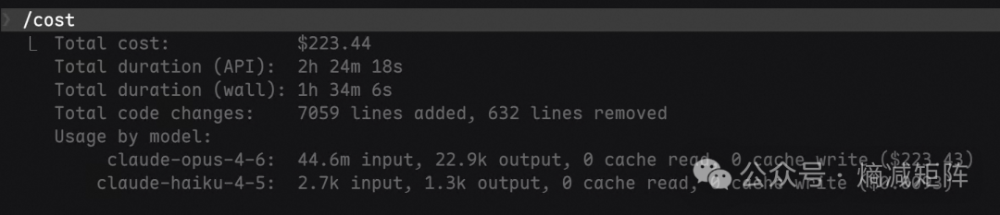
50w行代码，跑了一个多小时的分析
一、项目全景与设计哲学
1.1 代码规模
| 模块 | 行数 | 占比 | 核心职责 |
|---|---|---|---|
| utils | 180,472 | 35.2% | 权限、bash 安全、消息处理、git、MCP 等基础设施 |
| components | 81,546 | 15.9% | React 终端 UI 组件（权限对话框、diff、消息渲染） |
| services | 53,680 | 10.5% | API 调用、压缩、MCP 客户端、分析、OAuth |
| tools | 50,828 | 9.9% | 40+ 工具实现（Bash、FileEdit、Agent、MCP 等） |
| commands | 26,428 | 5.2% | 90+ 斜杠命令（/compact、/model、/mcp 等） |
| ink | 19,842 | 3.9% | 自研 Ink Fork（React 终端渲染引擎） |
| hooks | 19,204 | 3.7% | React hooks（权限处理、IDE 集成、语音等） |
| bridge | 12,613 | 2.5% | 远程控制（本地机器作为 bridge 环境） |
| cli | 12,353 | 2.4% | CLI 参数解析、后台会话管理 |
1.2 架构鸟瞰
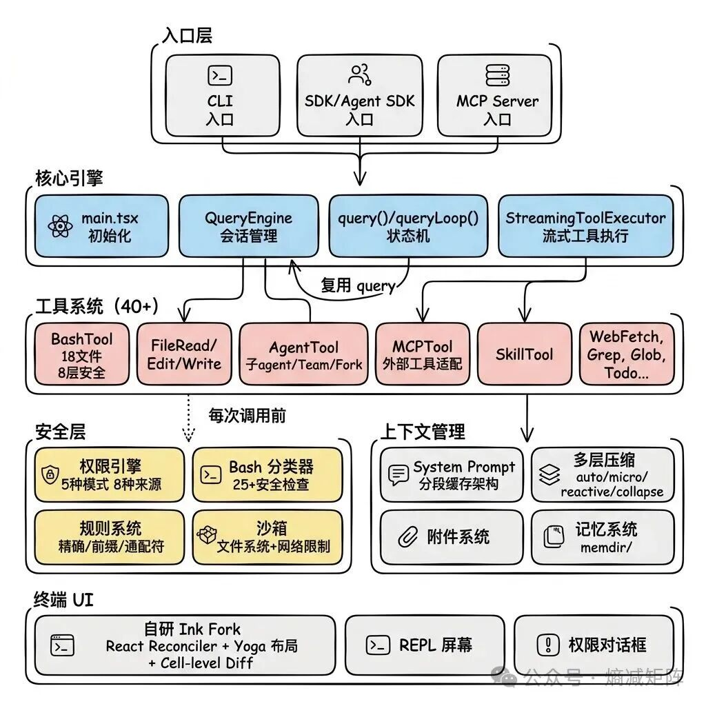
架构鸟瞰
1.3 五条设计原则
通读 51 万行代码后提炼的贯穿全局的设计原则：
- 1. 工具即能力边界：agent 能做什么完全由工具集决定，没有后门。读文件要用 FileReadTool，写文件要用 FileEditTool，执行命令要用 BashTool。新增能力 = 新增工具。
- 2. Fail-closed 安全默认：所有安全相关的默认值都是最保守的——工具默认不可并行（
isConcurrencySafe: false）、默认非只读（isReadOnly: false）、权限默认需要确认。
- 3. Context Engineering > Prompt Engineering：不是写一段 prompt 告诉模型"你是谁"，而是在每轮对话中精心组装完整的上下文环境——分段缓存、动态注入、多层压缩。
- 4. 可组合性：子 agent 复用主 agent 的
query()函数，MCP 工具复用内部权限检查，Team 复用 Subagent 的执行引擎。
- 5. 编译时消除 > 运行时判断：通过 Bun 的
feature()宏在构建时移除未启用的功能代码，未启用的功能在 bundle 中完全不存在。
二、Agent Loop：系统的心脏
文件：
src/QueryEngine.ts（1295 行）、src/query.ts（1729 行）、src/services/tools/StreamingToolExecutor.ts（530 行）、src/services/tools/toolExecution.ts（1745 行）
2.1 两层循环模型
Claude Code 的 Agent Loop 不是一个简单的 while 循环，而是一个有 7 种恢复路径和 10 种终止条件的隐式状态机，分为两层：
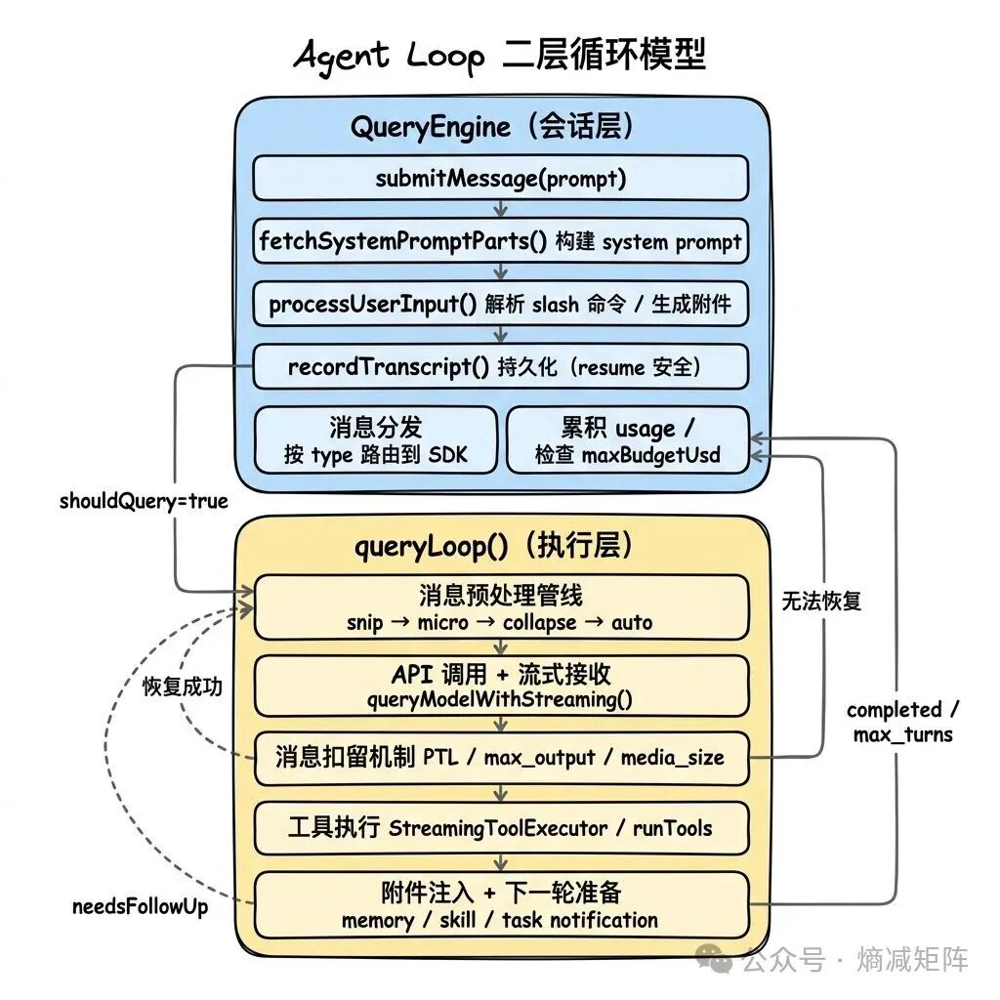
两层循环模型
为什么分两层？ 关注点分离。QueryEngine 处理"会话管理"——多轮状态、transcript 持久化、SDK 协议适配、usage 累积。queryLoop 处理"单轮执行"——API 调用、工具执行、错误恢复。两者通过 AsyncGenerator 连接：queryLoop yield 消息，QueryEngine 消费并转发。
为什么用 AsyncGenerator？ 三个原因：
1. 背压：调用方按需消费，不会被消息洪水淹没
2. 中断语义：generator 的 .return() 级联关闭所有嵌套 generator，取消操作自然传播
- 3. 流式组合：子 agent 的
runAgent()也是 AsyncGenerator，可以直接嵌套在父 agent 的 query 流中
2.2 queryLoop 的状态机设计
queryLoop 是一个 while(true) 循环，每次迭代代表一次"API 调用 + 工具执行"。循环的退出由两种类型决定：
- • Terminal：循环结束，返回终止原因
- • Continue：循环继续，通过
state = next; continue跳到下一次迭代
这不是显式状态机（没有 enum），而是通过 State 结构体追踪：
// src/query.ts:204-217（精简）
type State = {
messages: Message[]
toolUseContext: ToolUseContext
autoCompactTracking: AutoCompactTrackingState | undefined
maxOutputTokensRecoveryCount: number
hasAttemptedReactiveCompact: boolean
pendingToolUseSummary: Promise<ToolUseSummaryMessage | null> | undefined
turnCount: number
transition: Continue | undefined // 上一次迭代为什么 continue
}设计动机在注释中说明（query.ts:266-268）：用一个完整的 State 赋值替代多个独立变量赋值，确保每个 continue 站点都显式声明所有状态，避免遗漏。
完整的状态转换图：
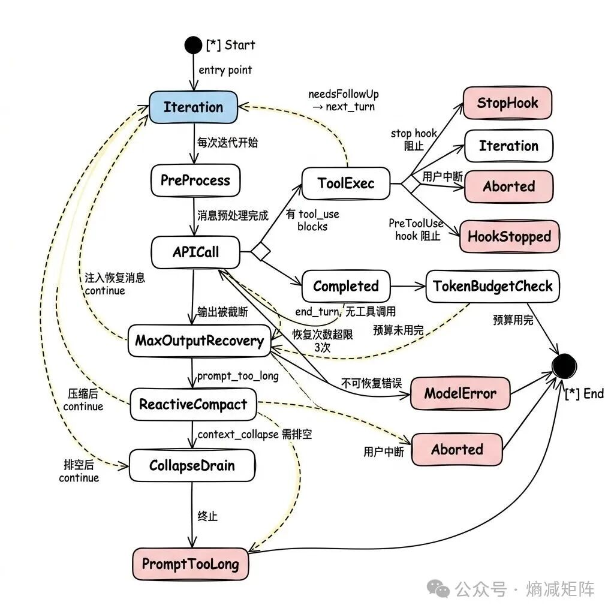
queryLoop 状态转换图
2.3 消息预处理管线：从轻到重
每次 API 调用前，消息要经过一条多阶段处理管线。这条管线的设计遵循"从轻到重"原则——先做廉价的本地操作，再做需要 API 调用的重操作：
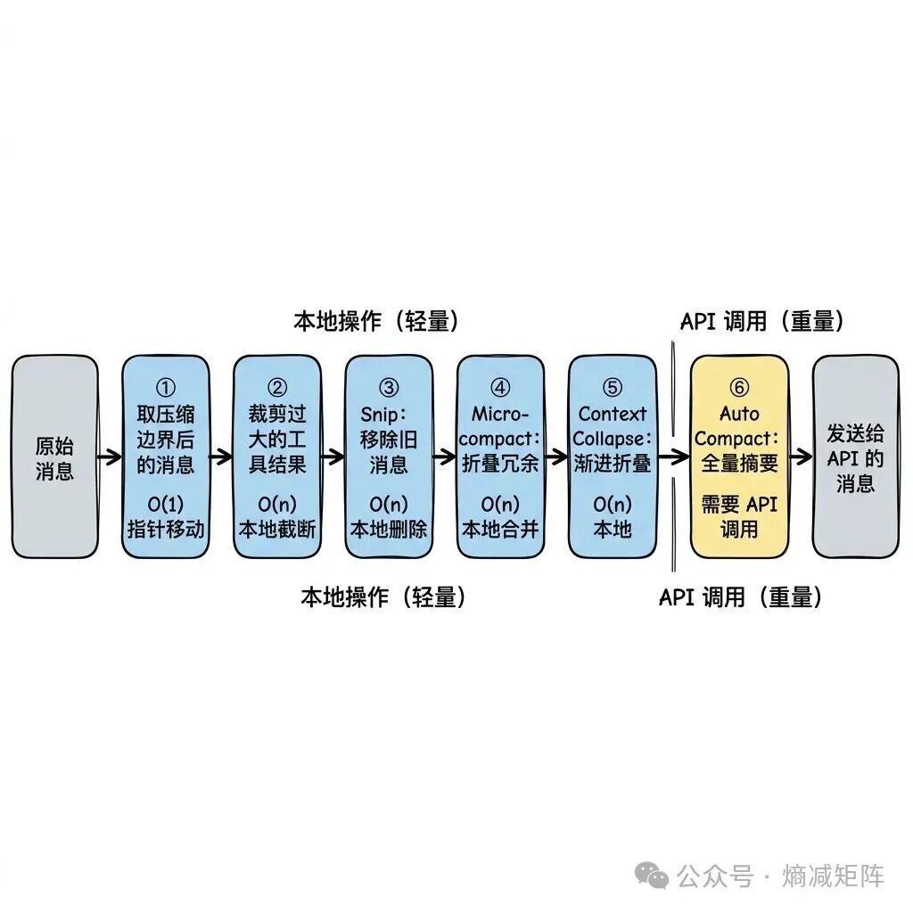
消息预处理管线
为什么不直接用 AutoCompact？因为 AutoCompact 需要一次完整的 API 调用来生成摘要，成本高且会摧毁细粒度上下文。如果前面的轻量操作已经释放了足够空间，AutoCompact 就不需要触发。Context Collapse 在 AutoCompact 之前运行，正是为了尽可能保留更多原始上下文。
AutoCompact 的阈值计算：有效上下文窗口 = 模型上下文窗口 - max(max_output_tokens, 20000)，触发阈值 = 有效上下文窗口 - 13000。对于 200k 上下文的模型，大约在 167k tokens 时触发。
一个重要的工程细节：AutoCompact 有断路器机制——连续失败 3 次后停止重试。代码注释引用了真实数据："1,279 sessions had 50+ consecutive failures (up to 3,272), wasting ~250K API calls/day globally"。这说明在大规模部署中，即使是小概率的异常路径也会造成巨大的资源浪费。
2.4 流式工具执行器：并发控制的精髓
当模型返回多个工具调用时（比如同时读取 3 个文件），如何执行？Claude Code 提供了两种模式：
批量执行：等 API 流式接收完全结束，然后按顺序执行所有工具。简单可靠，但延迟高——第一个 Read 要等最后一个 tool_use block 接收完才能开始。
流式执行（StreamingToolExecutor）：API 流式接收期间，每收到一个 tool_use block 就立即开始执行。这是 Claude Code 的默认模式，也是性能优化的关键。
流式执行器的并发控制模型值得深入理解：
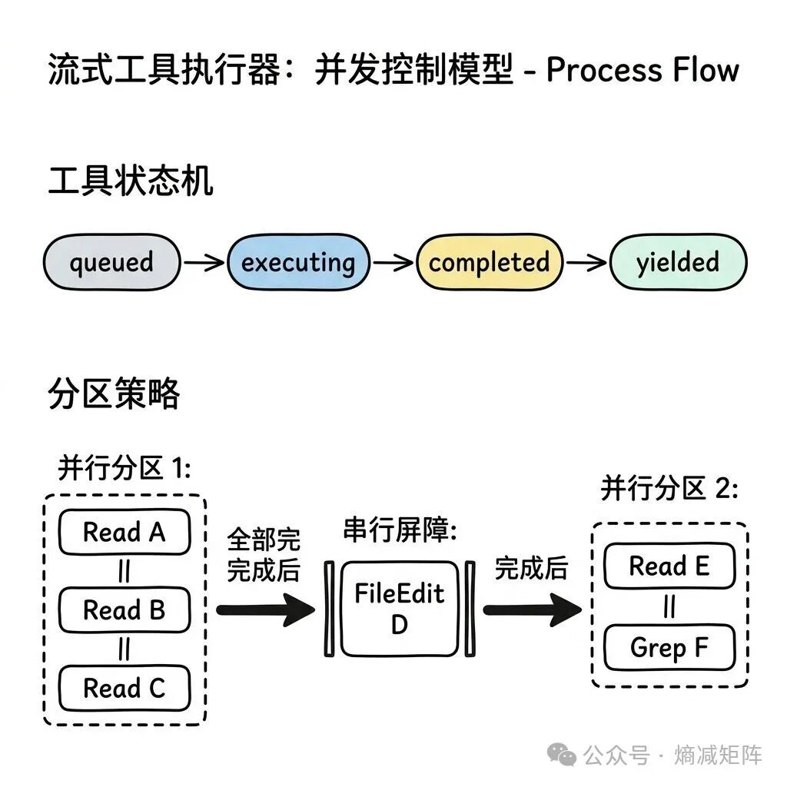
流式工具执行器
核心规则：每个工具通过 isConcurrencySafe(input) 声明自己是否可以并行执行。连续的并发安全工具组成一个"并行分区"，遇到非并发安全工具就开始新分区。分区间串行执行，分区内并行执行。
为什么 FileRead 是并发安全的而 FileEdit 不是？因为两个并行的 FileEdit 可能编辑同一个文件的不同位置，导致行号偏移和冲突。FileRead 只读不写，天然无冲突。
一个防御性设计：如果 isConcurrencySafe 的调用抛出异常（比如输入解析失败），默认视为不安全。这是 fail-closed 原则的体现——宁可串行执行降低性能，也不冒并发冲突的风险。
2.5 消息扣留机制：保护 SDK 消费者
并非所有从 API 收到的消息都立即传递给调用方。三类消息会被"扣留"：
1. prompt-too-long 错误：被 reactiveCompact 扣留，尝试压缩后重试
2. media-size 错误：尝试剥离过大的图片后重试
3. max_output_tokens 错误：等待恢复循环决定是否能继续
扣留的动机是一个关键的 API 契约考量：SDK 消费者（如 desktop app、cowork）看到 error 字段就会终止会话。但 queryLoop 内部可能还有恢复路径——如果过早暴露中间错误，恢复循环还在运行但已经没人在听了。
2.6 Token Budget：让模型"做完"复杂任务
当模型自然停止（end_turn）但 token 预算未用完时，系统会注入一条 nudge 消息让模型继续工作。这解决了一个实际问题：复杂任务（如大规模重构）可能需要模型输出超过默认 max_output_tokens 的内容。
递减收益检测防止无限循环：如果连续 3 次检查每次增量都 < 500 tokens，说明模型已经没有实质性工作要做了，停止继续。子 agent 不参与 token budget（避免子 agent 无限运行），只有主线程 agent 可以使用。
三、工具系统：Agent 的手与脚
文件：
src/Tool.ts（792 行）、src/tools.ts（389 行）、src/tools/（40+ 工具目录，~50,000 行）
Agent Loop 决定"做什么"，工具系统决定"怎么做"。Claude Code 的核心设计信条是：agent 能做什么，完全由它拥有的工具集决定。系统中没有任何"后门"让 agent 绕过工具直接操作环境。这个约束带来三个好处：可审计性（每个操作都有记录）、可控性（权限系统只需拦截工具调用这一个入口）、可扩展性（新增能力 = 新增工具）。
3.1 Tool 接口：六个功能组
Tool 类型是一个包含 30+ 方法的泛型接口，可以分为六个功能组：
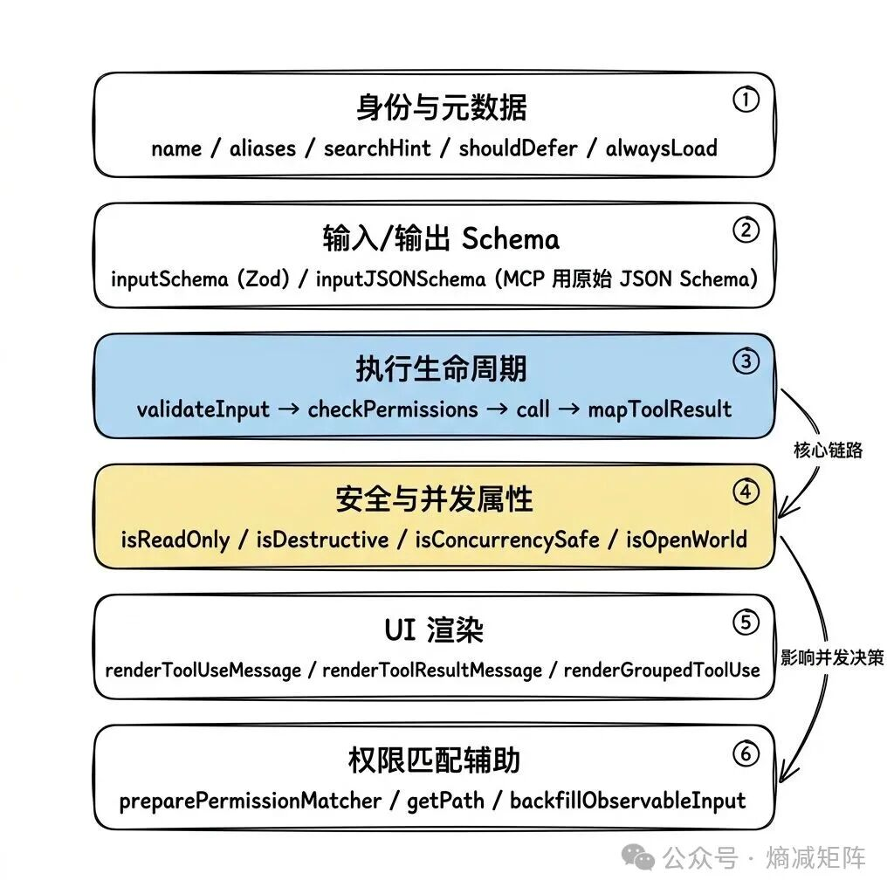
Tool 接口六个功能组
每个工具通过 buildTool 工厂函数构建，该函数提供安全默认值。关键的默认值设计：
| 属性 | 默认值 | 设计动机 |
|---|---|---|
isConcurrencySafe | false | 假设不能并行，防止并发冲突 |
isReadOnly | false | 假设会写入，触发更严格的权限检查 |
isDestructive | false | 不假设破坏性，避免过度警告 |
checkPermissions | allow | 默认放行，由外层权限系统兜底 |
这组默认值体现了一个微妙的平衡：并发和只读属性 fail-closed（保守），权限检查 fail-open（宽松）。原因是并发冲突和误写是工具内部问题，必须自己负责；而权限判断有外层的多层防御体系兜底。
3.2 ToolUseContext：工具的运行时环境
每个工具的 call() 方法接收一个 ToolUseContext 对象，包含 40+ 个字段。为什么工具需要这么多上下文？因为工具不是纯函数：
| 上下文字段 | 用途 | 为什么不能省略 |
|---|---|---|
readFileState | 文件读取状态缓存 | FileEditTool 需要验证"不能编辑未读过的文件" |
abortController | 取消信号 | BashTool 的长时间命令需要支持用户中断 |
setToolJSX | UI 渲染回调 | BashTool 需要渲染实时进度条 |
agentId | 子 agent 标识 | 区分主线程和子 agent，影响权限和 CWD |
contentReplacementState | token 预算控制 | 防止工具结果消耗过多上下文窗口 |
updateFileHistoryState | 文件历史 | 支持 /rewind 命令撤销文件修改 |
ToolResult 的返回值中有一个精妙的 contextModifier 字段：某些工具执行后需要修改后续工的上下文（比如切换工作目录），但又不能直接修改全局状态。contextModifier 提供了一个受控的方式来做这件事，且只对非并发安全的工具生效——并发执行的工具不能互相修改上下文。
3.3 工具注册：三种加载策略
工具注册中心（src/tools.ts）根据当前环境组装可用工具集，采用三种加载策略：
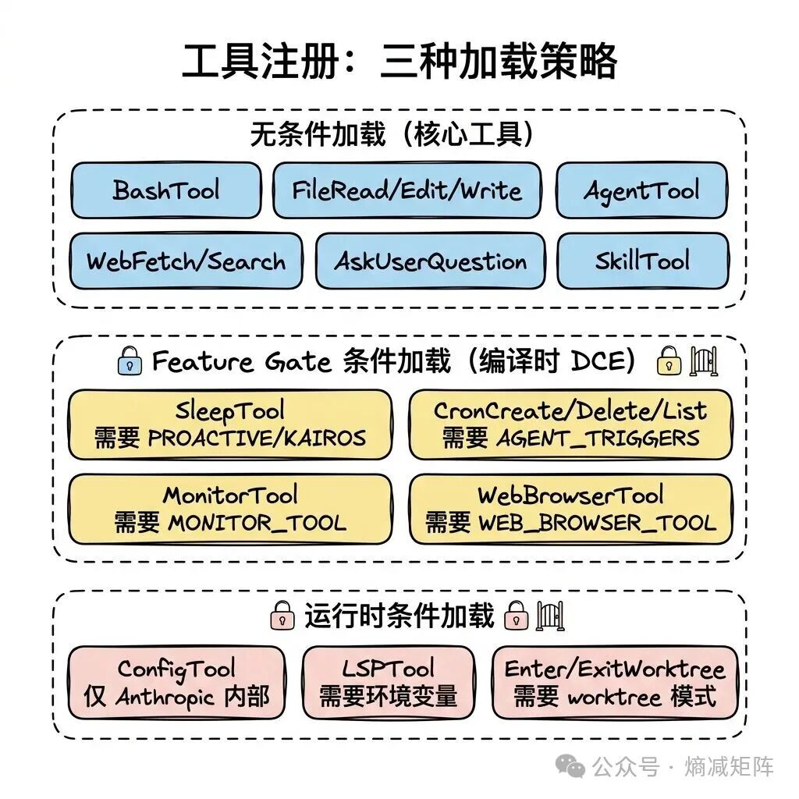
工具注册三种加载策略
Feature gate 使用 Bun 的 feature() 宏实现编译时死代码消除（DCE）。当 feature flag 为 false 时，整个 require() 分支在构建时被完全移除——不仅不执行，连代码都不会出现在最终 bundle 中。这解释了为什么用 require() 而不是 import：动态 require 可以被条件包裹，静态 import 不行。
工具集的最终组装（assembleToolPool）将内建工具和 MCP 工具合并时，采用分区排序——内建工具在前按名称排序，MCP 工具在后按名称排序，两组之间不混合。原因是服务端的 prompt cache 策略在最后一个内建工具之后放置缓存断点，如果 MCP 工具插入到内建工具之间会导致缓存失效。
3.4 BashTool 深度解析：18 个文件的安全堡垒
BashTool 是整个工具系统中最复杂的单一工具（18 个文件），复杂性来自一个根本矛盾：shell 命令的表达力几乎无限，但安全约束必须严格。
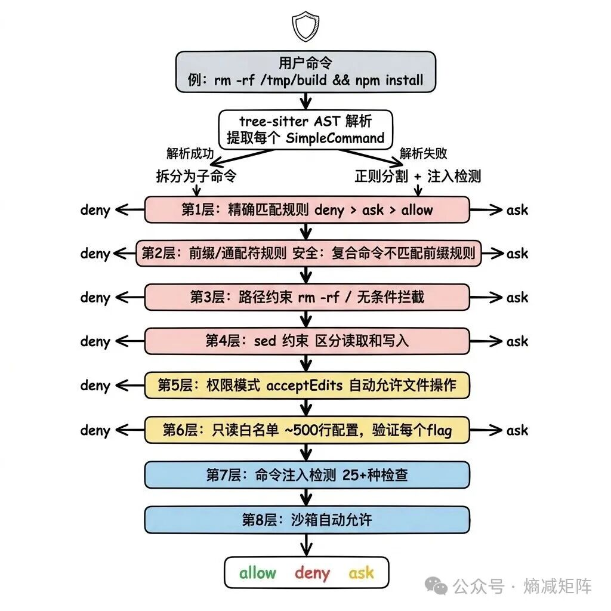
BashTool 8 层安全检查
几个值得学习的安全设计：
复合命令隔离：Bash(cd:*) 前缀规则不会匹配 cd /path && python3 evil.py。系统先用 tree-sitter 解析 AST，提取每个 SimpleCommand，对每个子命令独立运行权限检查。任何子命令被 deny，整个命令被 deny。子命令数量上限 50，超过直接要求用户确认——防止 ReDoS 和事件循环饥饿。
只读白名单的 flag 级验证：不只检查命令名，还验证每个 flag 的值类型。比如 xargs -I 和 -i 看起来相似，但 -i 的 GNU 实现有可选参数语义，可以被利用执行任意命令。白名单为每个 flag 定义了允许的值类型（'none'、'number'、'string'、特定值），精确到这个级别才能防止 flag 注入。
命令注入检测（bashSecurity.ts）：25+ 种检查，覆盖命令替换（$()、反引号）、进程替换（<()）、参数替换（${}）、Zsh 特有危险命令（zmodload、syswrite）、控制字符、Unicode 空白字符等。
沙箱机制：通过 SandboxManager 限制文件系统读写路径、网络访问主机、Unix socket。沙箱内的命令即使没有匹配任何 allow 规则也可以执行，但 deny/ask 规则仍然优先——沙箱是"安全网"而非"免死金牌"。
3.5 FileEditTool：搜索-替换的安全设计
FileEditTool 实现了"搜索-替换"模式的文件编辑。核心约束：old_string 必须在文件中唯一匹配。如果有多处匹配，编辑失败并要求提供更多上下文。这个约束看似严格，但避免了"编辑了错误位置"的灾难性错误。
另一个安全不变量：不能编辑未读过的文件。readFileState 缓存跟踪哪些文件被 FileReadTool 读取过，如果模型试图编辑未读文件，系统拒绝并提示先读取。这防止了模型"凭记忆"编辑文件——它必须先看到文件的当前状态。
四、权限体系：系统的免疫系统
文件：
src/utils/permissions/（24 个文件）、src/hooks/toolPermission/（5 个文件）、src/components/permissions/（50+ 个文件）
工具系统定义了 agent 能做什么，权限体系定义了 agent 被允许做什么。这是整个系统中最关键的信任机制——它必须在"让 AI 高效工作"和"防止 AI 搞砸一切"之间找到平衡。
4.1 权限模式：信任的刻度盘
权限模式是用户对 AI 信任程度的全局声明。系统定义了一个从"完全不信任"到"完全信任"的连续谱：
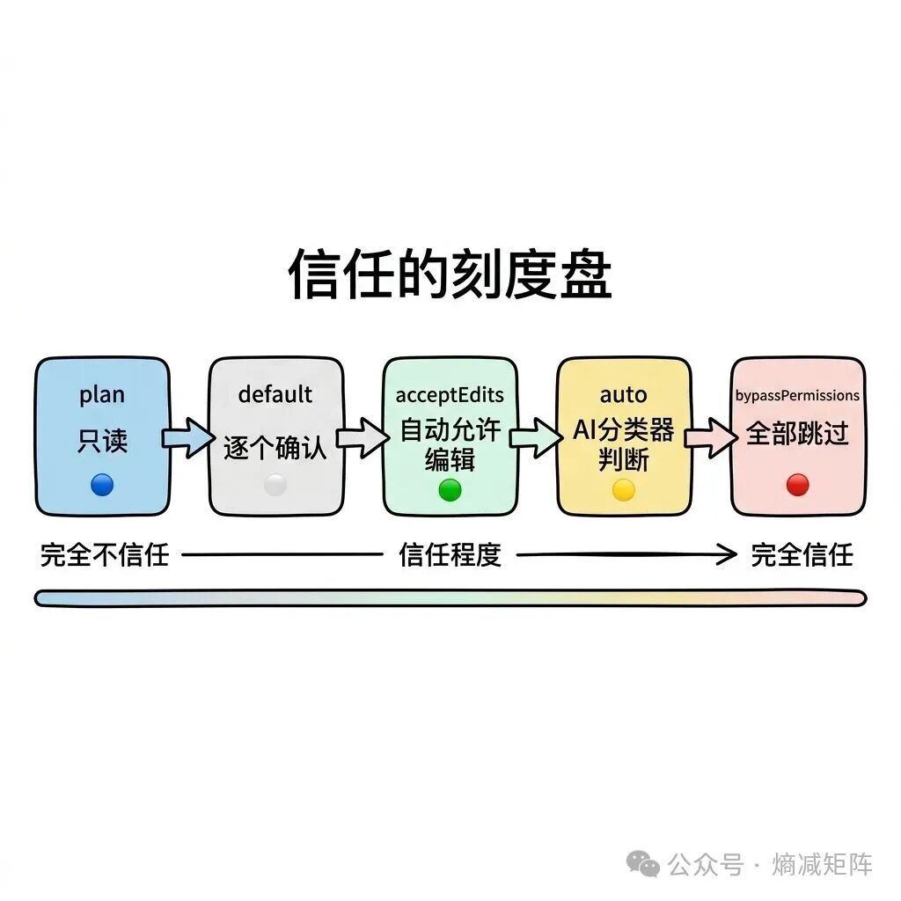
权限模式
| 模式 | 行为 | 适用场景 |
|---|---|---|
plan | AI 只能规划，不能执行任何写操作 | 探索性分析、代码审查 |
default | 每个工具调用都需要用户确认 | 日常开发（默认） |
acceptEdits | 工作目录内的文件编辑自动允许，其他操作仍需确认 | 信任 AI 的重构能力 |
auto | AI 分类器自动判断操作安全性 | 高信任场景（仅内部用户） |
bypassPermissions | 跳过所有权限检查（除硬编码安全检查） | 紧急修复、受控环境 |
dontAsk | 将所有 'ask' 转为 'deny'，AI 自主运行但遇到需确认的操作直接跳过 | 完全自动化的 CI/CD |
为什么不是简单的开/关？因为不同场景需要不同的信任级别。这个谱系让用户可以精确控制自己的舒适区。
远程熔断：即使用户选择了 bypassPermissions，系统仍保留远程禁用的能力。bypassPermissionsKillswitch.ts 通过 Statsig 特性门控实现"紧急刹车"——当发现严重安全漏洞时，Anthropic 可以远程降级所有用户的 bypass 模式。auto 模式也有类似的 autoModeCircuitBroken 熔断器。
4.2 权限判断主流程：多层评估管线
每次 AI 要调用工具时，系统执行一个严格有序的评估管线。以 rm -rf / 为例追踪完整流程：
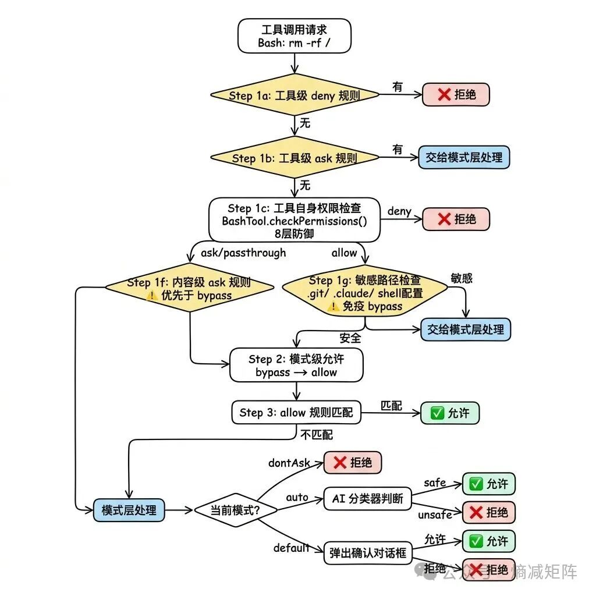
权限判断主流程
几个关键的设计决策值得深入理解：
用户显式 ask 规则优先于 bypass 模式（Step 1f）：如果用户配置了 ask: ["Bash(npm publish:*)"]，即使在 bypassPermissions 模式下也会弹出确认。设计哲学是"用户的显式意图永远优先"——bypass 是"我信任 AI 的一般判断"，但 ask 规则是"这个特定操作我要亲自确认"。
敏感路径免疫 bypass（Step 1g）：对 .git/、.claude/、.vscode/、shell 配置文件（.bashrc、.zshrc）的写入，即使在 bypass 模式下也必须确认。这是硬编码的安全底线，不可被任何模式覆盖。原因很直接：这些文件的修改可能影响整个开发环境的安全性。
拒绝追踪与熔断：auto 模式下，如果分类器连续拒绝 3 次或总共拒绝 20 次，系统从自动拒绝降级为弹出确认对话框。这防止了 AI 陷入"尝试-被拒-换个方式再试-又被拒"的死循环。在 headless 模式下，达到限制直接抛出 AbortError 终止整个 agent。
4.3 规则系统：精细化控制
每条权限规则由三个维度定义：
来源（source） 决定优先级和可编辑性：
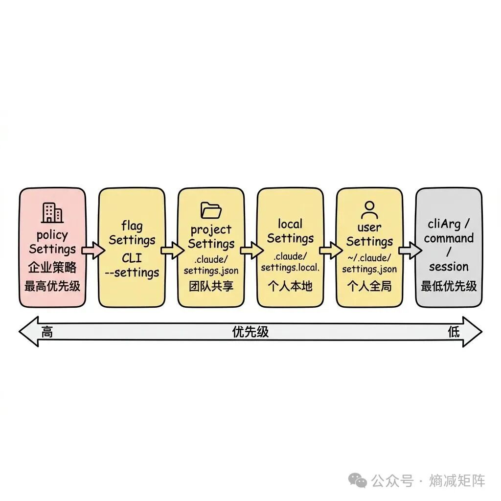
权限规则来源
企业管理员可以通过 policySettings 强制覆盖任何规则。当 allowManagedPermissionRulesOnly 为 true 时，只加载 policySettings 的规则——这是企业级的"锁定"模式。
Shell 规则匹配的三种模式：精确匹配（npm install）、前缀匹配（npm:*，遗留语法）、通配符匹配（git commit *）。通配符匹配将模式转换为正则表达式，有一个巧妙的细节：当模式以 *（空格+通配符）结尾且只有一个通配符时，尾部变为可选的，使得 git * 同时匹配 git add 和裸 git。
规则遮蔽检测（shadowedRuleDetection.ts）解决了一个用户体验问题：当用户同时配置了矛盾的规则时，某些规则可能永远不会生效。比如同时有 deny: ["Bash"] 和 allow: ["Bash(ls:*)"]，后者永远不会生效因为 deny 在管线中先于 allow 检查。系统会在 UI 中显示警告帮助用户修复。
4.4 权限在多 Agent 场景下的传递
权限系统为不同的 agent 模式提供了三种处理器（src/hooks/toolPermission/handlers/）：
| 处理器 | 场景 | 行为 |
|---|---|---|
interactiveHandler | 标准交互模式 | 弹出 UI 对话框让用户决定 |
coordinatorHandler | Coordinator 模式 | 先运行自动化检查（分类器、hooks），再决定是否需要用户确认 |
swarmWorkerHandler | Swarm worker 模式 | 通过 Leader Permission Bridge 将权限请求冒泡到 leader |
异步 agent 无法显示 UI，设置 shouldAvoidPermissionPrompts: true。遇到需要确认的操作时，先尝试 PermissionRequest hooks，如果没有 hook 做出决定，自动拒绝。bubble 模式是例外——它将权限提示冒泡到父终端，让用户在父 agent 的界面中确认子 agent 的操作。
五、多 Agent 协作：蜂群智能
文件：
src/tools/AgentTool/（20 个文件）、src/utils/swarm/（22 个文件）、src/coordinator/、src/tasks/（12 个文件）
当一个任务太复杂——比如"重构这个模块并写测试"——单个 agent 可能需要在阅读代码、修改文件、运行测试之间反复切换，上下文窗口很快就会被填满。多 Agent 协作通过任务分解和并行执行来解决这个问题。
5.1 三层协作架构
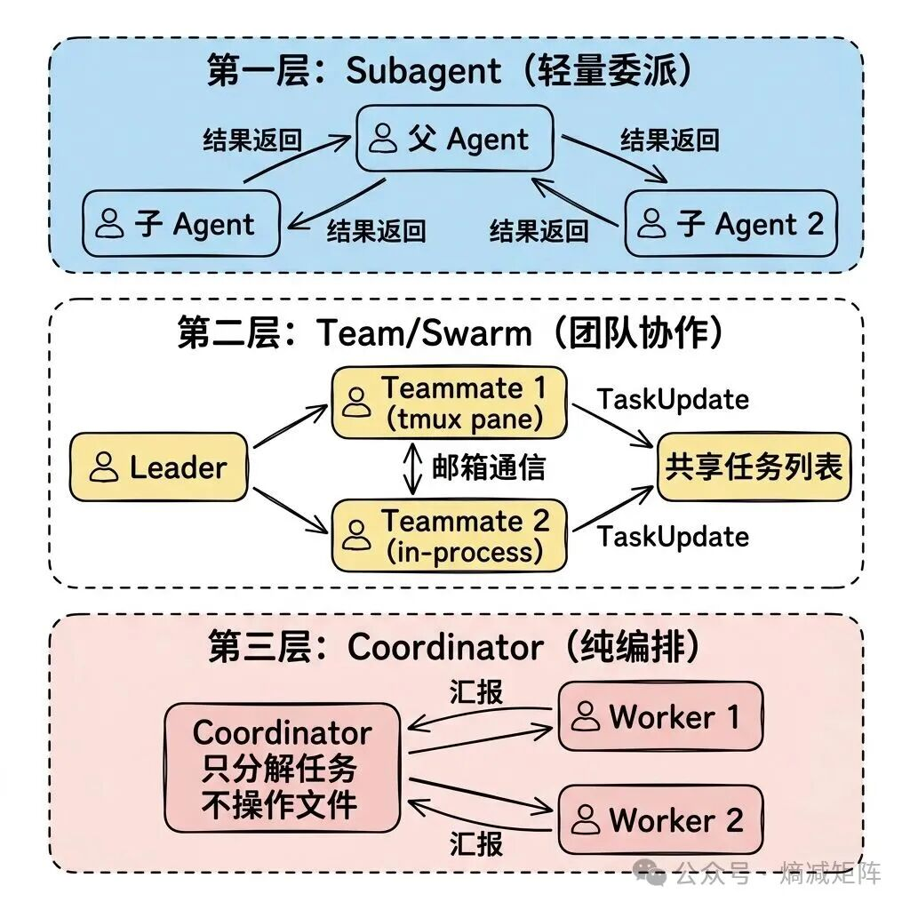
三层协作架构
三层的设计边界：
- • Subagent：最轻量，父 agent 同步/异步派生子 agent，适合"帮我搜索一下"这类简单委派
- • Team/Swarm：成员之间可以互相通信，有 leader/teammate 角色分工，适合"前端和后端同时开发"
- • Coordinator：纯编排模式，coordinator 不直接操作文件，所有实际工作由 worker 完成，适合大规模并行任务
5.2 AgentTool：统一入口的路由设计
所有多 agent 协作都通过同一个工具触发——AgentTool。这个设计降低了模型的认知负担：它只需要学会使用一个工具，通过参数组合触发不同的协作模式。
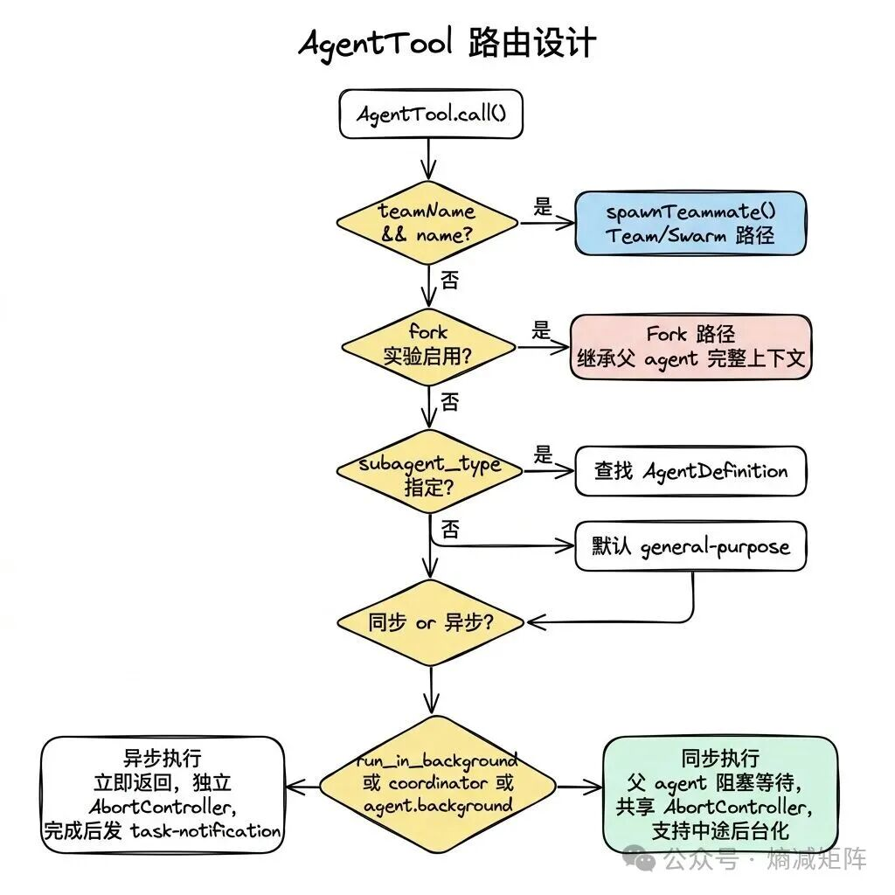
AgentTool 路由设计
5.3 Agent 定义体系：三层联合类型
Agent 的类型定义是一个三层联合类型：内置 agent（BuiltInAgentDefinition）、用户自定义 agent（CustomAgentDefinition）、插件 agent（PluginAgentDefinition）。
每个 agent 定义包含：类型标识符、使用场景描述（注入到 AgentTool 的 prompt 中）、工具白名单/黑名单、系统 prompt 生成函数、模型选择、权限模式覆盖、持久记忆范围、隔离模式、生命周期钩子、专属 MCP 服务器。
优先级覆盖机制：built-in < plugin < userSettings < projectSettings < flagSettings < policySettings。同名 agent 按此优先级覆盖，企业管理员可以通过 policySettings 强制覆盖任何 agent 的行为。
5.4 内置 Agent 类型的设计哲学
| Agent | 模型 | 工具限制 | 关键设计决策 |
|---|---|---|---|
| general-purpose | 默认子 agent 模型 | 全部工具 | 万能工人，无特殊限制 |
| Explore | haiku（外部）/ inherit（内部） | 只读，禁止 Edit/Write/Agent | 用最便宜的模型做搜索，每周 3400 万次调用 |
| Plan | inherit | 只读，禁止 Edit/Write/Agent | 架构设计，不需要执行能力 |
| verification | inherit | 只读（项目目录），可写 /tmp | 独立验证，总是异步运行 |
Explore 的 token 优化值得学习：省略 CLAUDE.md（搜索 agent 不需要 commit/PR/lint 规则）和 gitStatus（只读 agent 不需要 git 状态），注释提到这两个优化"saves ~5-15 Gtok/week across 34M+ Explore spawns"。在大规模部署中，每次节省几千 token 的累积效果巨大。
Verification agent 的"反自我欺骗"设计：它的 system prompt 是最长的 agent prompt 之一（~120 行），明确列出 LLM 常见的验证逃避模式——"代码看起来正确"、"测试已经通过了"——并要求每个检查必须有实际执行的命令和输出。background: true 标记意味着它总是异步运行，不阻塞主 agent。这是对 LLM 已知弱点的工程化对策。
5.5 子 agent 的执行引擎
runAgent() 是子 agent 的核心执行函数，也是一个 AsyncGenerator。关键设计：子 agent 复用主 agent 的 query() 函数——同一个 agent loop，只是上下文不同。这是可组合性的极致体现。
权限模式覆盖的安全规则：agent 可以定义自己的 permissionMode，但有一个重要约束——bypassPermissions、acceptEdits、auto 模式的父 agent 不会被子 agent 降级。也就是说，如果父 agent 在 bypass 模式下，子 agent 不能把自己设为 default 模式来"假装更安全"。
工具过滤的三层逻辑：
1. 全局禁止列表（ALL_AGENT_DISALLOWED_TOOLS）——所有 agent 都不能用的工具
2. 自定义 agent 禁止列表（CUSTOM_AGENT_DISALLOWED_TOOLS）——非内置 agent 不能用的工具
3. 异步 agent 白名单（ASYNC_AGENT_ALLOWED_TOOLS）——异步 agent 只能用白名单中的工具
MCP 工具始终放行（tool.name.startsWith('mcp__') → true），因为它们是外部能力扩展，不应被 agent 类型限制。
清理阶段的 8 项清理操作（MCP 断开、session hooks 清除、prompt cache 清理、文件状态缓存释放、Perfetto 追踪注销、transcript 映射清除、孤儿 todo 清除、后台 bash 终止）说明了子 agent 的资源占用——每个子 agent 都是一个完整的执行环境，需要精确的生命周期管理。
5.6 Fork Subagent：Prompt Cache 优化的极致
Fork 是实验性功能，代表了一种全新的子 agent 模式：继承父 agent 的完整对话历史和系统 prompt，只需要一个简短的指令。
核心优化目标是最大化 prompt cache 命中率。消息构建策略：保留父 agent 的完整 assistant message（所有 tool_use blocks），为每个 tool_use 生成相同的占位 tool_result，在最后追加一个 per-child 的指令文本块。结果：只有最后一个文本块因 child 而异，前面的所有内容字节相同。多个 fork 并行启动时共享同一个 prompt cache 前缀。
防递归设计：fork 子 agent 保留了 Agent 工具（为了 cache-identical 工具定义），但在 call() 时通过两重检查阻止递归 fork——querySource 检查（compaction-resistant）和消息扫描 <fork-boilerplate> 标签（fallback）。
指令格式的设计非常讲究：大写 "STOP. READ THIS FIRST." 确保 LLM 注意到身份切换；明确说"你的 system prompt 说'默认 fork'，忽略它"——因为 fork 子 agent 继承了父 agent 的 system prompt，其中包含 fork 指导。
5.7 Team/Swarm：两种后端的权衡
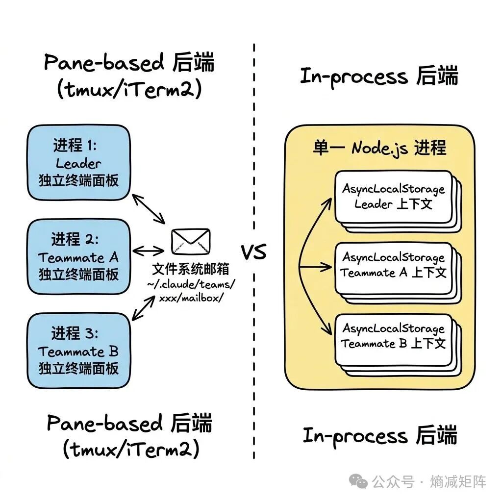
Team/Swarm 两种后端
| 维度 | Pane-based | In-process |
|---|---|---|
| 隔离性 | 强（独立进程） | 弱（共享进程） |
| 资源开销 | 高（每个 teammate 一个 Node.js 进程） | 低 |
| 用户可见性 | 高（每个 agent 有独立终端面板） | 低 |
| 崩溃影响 | 隔离（一个崩溃不影响其他） | 级联（可能影响所有 teammate） |
| 适用场景 | 交互式开发 | SDK/headless 模式 |
后端选择逻辑：已在 tmux 内 → TmuxBackend；在 iTerm2 内 → ITermBackend；都不在 + tmux 可用 → TmuxBackend（外部会话）；都不可用 → 抛错提示安装 tmux。SDK 模式强制使用 In-process。
通信机制统一为 TeammateExecutor 接口：spawn()、sendMessage()、terminate()、kill()、isActive()。无论底层是文件系统邮箱还是内存通信，上层代码不需要关心。
5.8 进程内 Teammate 运行器：最复杂的协作引擎
src/utils/swarm/inProcessRunner.ts（~1400 行）是进程内 teammate 的执行引擎，也是 Swarm 系统中最复杂的文件。
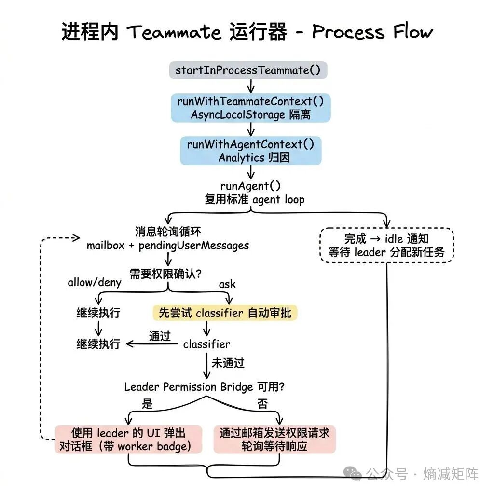
进程内 Teammate 运行器
进程内 teammate 的权限处理是整个系统中最精巧的部分。createInProcessCanUseTool() 创建了一个自定义的权限检查函数，实现了三级降级策略：
1. 标准 hasPermissionsToUseTool() 检查——如果结果是 allow 或 deny，直接返回
2. 如果结果是 ask，先尝试 classifier 自动审批（对 bash 命令）
3. 优先路径：通过 leaderPermissionBridge 使用 leader 的 UI 弹出对话框，带 worker badge 标识
4. 降级路径：通过邮箱发送权限请求，轮询等待响应
Leader Permission Bridge 是一个模块级别的桥接器——REPL 注册其 setToolUseConfirmQueue 和 setToolPermissionContext 函数，进程内 teammate 通过这些函数直接使用 leader 的 UI 来显示权限对话框。当 teammate 的权限请求被批准时，权限更新写回 leader 的共享上下文，但 preserveMode: true 防止 worker 的权限模式泄漏回 coordinator。
Idle 生命周期：Teammate 完成当前任务后不会退出，而是进入 idle 状态，通过 Stop hook 发送 idle 通知给 leader，等待分配新任务。这避免了频繁的进程创建/销毁开销。idle 通知中包含最近的 peer DM 摘要，让 leader 了解 teammate 之间的协作状态。
内存防护：TEAMMATE_MESSAGES_UI_CAP = 50 限制了 AppState 中存储的消息数量。注释提到一个"鲸鱼会话"在 2 分钟内启动了 292 个 agent，达到 36.8GB 内存。消息上限是对这种极端场景的防御。
5.9 Teammate 通信：邮箱系统与消息路由
Teammate 之间通过文件系统邮箱通信，路径为 ~/.claude/teams/<teamName>/mailbox/<agentName>/。SendMessageTool 是通信的统一入口，支持多种路由目标：
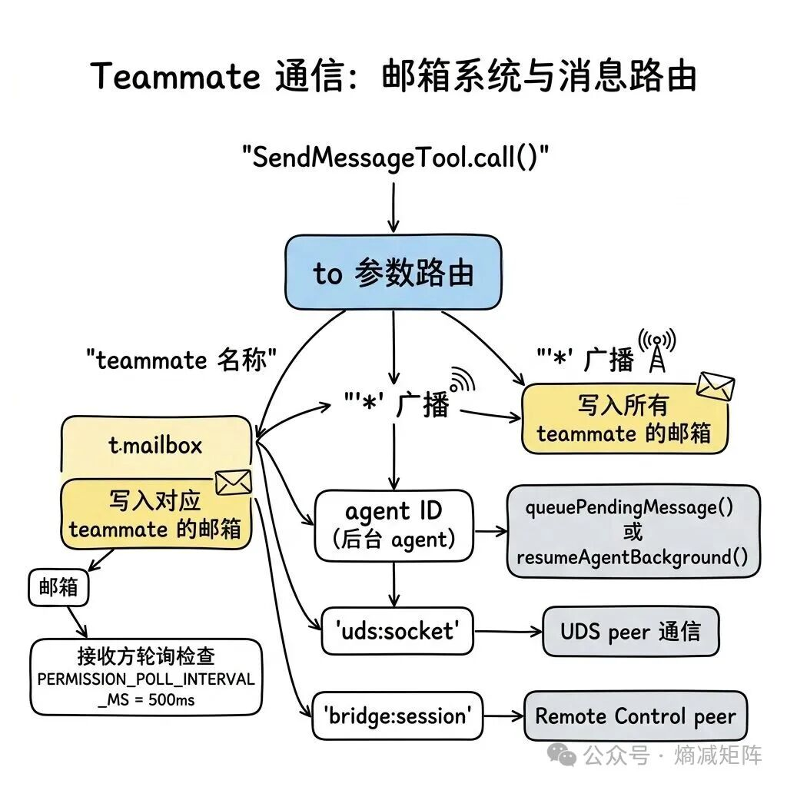
Teammate 通信路由
消息支持两种格式：纯文本（日常通信）和结构化消息（shutdown_request、shutdown_response、plan_approval_request 等协议消息）。结构化消息用于 leader 和 teammate 之间的生命周期管理——leader 发送 shutdown_request，teammate 回复 shutdown_response 确认后退出。
5.10 Coordinator 模式：纯编排者的设计
Coordinator 模式（src/coordinator/coordinatorMode.ts）是多 agent 协作的最高层抽象。与 Subagent 和 Team 不同，Coordinator 自己不操作文件——它只有 ~6 个工具（TeamCreate、TeamDelete、SendMessage、Agent、TaskStop、SyntheticOutput），没有 Bash、Read、Write、Edit。
Coordinator 的系统 prompt（~260 行）定义了一个四阶段工作流：Research → Synthesis → Implementation → Verification。其中最关键的设计原则是"永远不要委派理解"：
Anti-pattern（坏）：
Agent({ prompt: "Based on your findings, fix the auth bug" })Good（好）：Agent({ prompt: "Fix the null pointer in src/auth/validate.ts:42. The user field on Session is undefined when sessions expire..." })
这个原则的深层原因：worker 从零开始，没有 coordinator 的对话上下文。如果 coordinator 不综合研究结果就直接转发，worker 会缺乏关键信息。Coordinator 的核心价值就是综合——把多个 worker 的发现融合成精确的执行指令。
Scratchpad 共享存储：Coordinator 模式下有一个跨 worker 共享的 scratchpad 目录，worker 可以在这个目录中自由读写不需要权限审批。这解决了 worker 之间需要传递中间结果的问题。
Coordinator 与 Fork 互斥：Coordinator 已经是纯编排者，它不读文件、不写代码。Fork 的设计是"继承上下文的分身"，但 Coordinator 没有执行上下文可以继承——fork 一个 Coordinator 只会得到另一个编排者，没有意义。
5.11 Task 系统：异步工作的基础设施
所有异步工作（shell 命令、agent、teammate、记忆整理）都注册到 AppState.tasks，通过统一的 Task 接口管理。
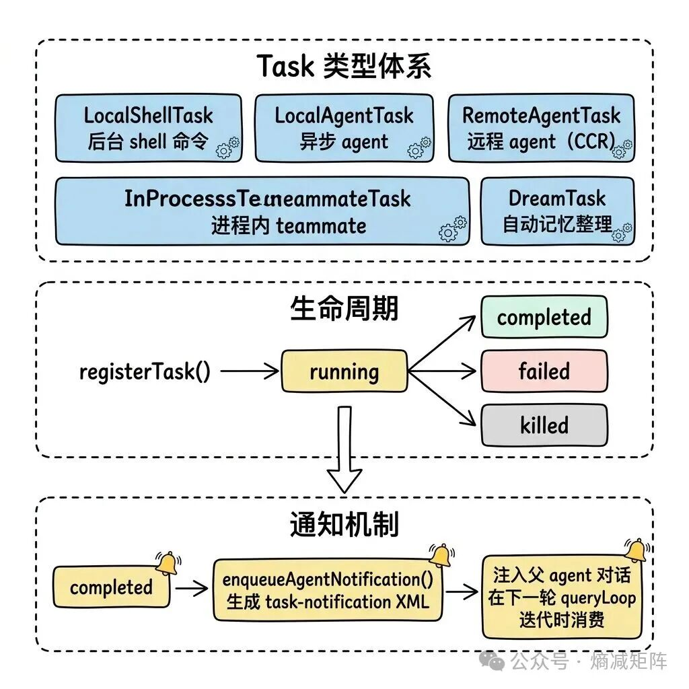
Task 系统
LocalAgentTask 的进度追踪维度：工具调用次数、token 消耗（input + output）、最近 5 个工具调用的描述。进度信息实时写入 AppState，UI 层显示。
InProcessTeammateTask 有两个 AbortController：abortController 杀死整个 teammate，currentWorkAbortController 只取消当前轮次的工但 teammate 继续存活。这个区分让 leader 可以"打断"teammate 的当前任务而不需要重新创建它。
DreamTask（自动记忆整理）是一个特殊的后台任务——系统在空闲时自动运行子 agent，回顾最近的会话并整理记忆文件。它的 kill() 方法会回滚锁的 mtime，让下次会话可以重试被中断的整理。
5.12 权限在多 Agent 场景下的完整传递链
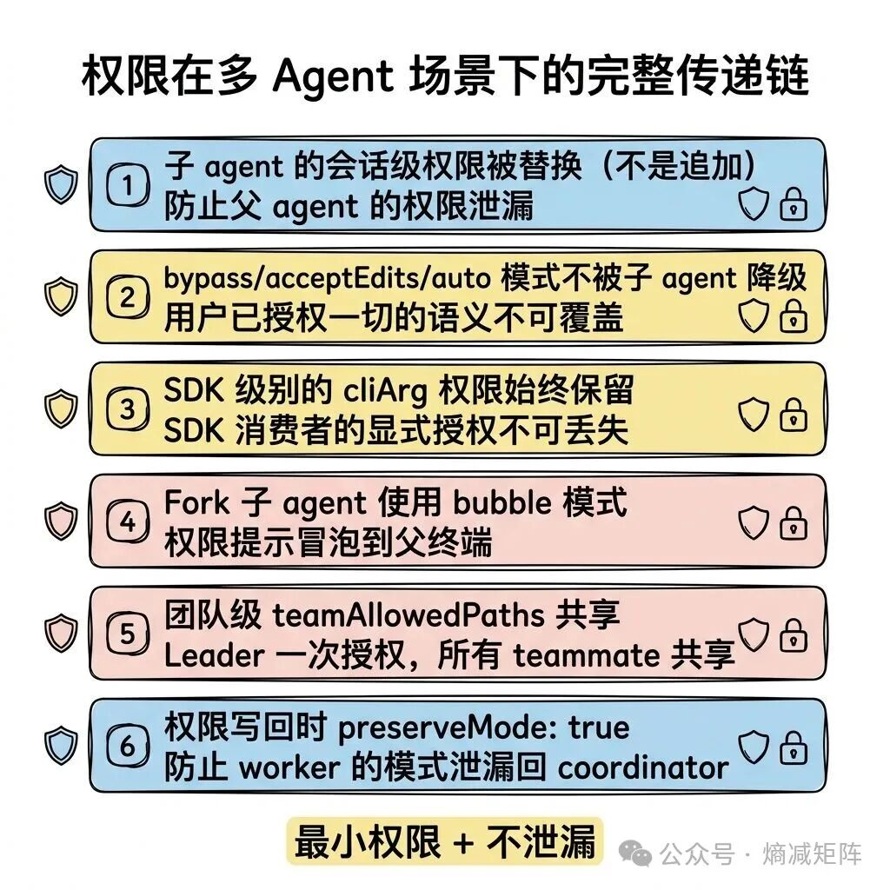
权限传递规则
这六条规则共同实现了"最小权限 + 不泄漏"的原则：每个 agent 只拥有完成任务所需的最小权限，权限变更不会意外传播到其他 agent。
六、System Prompt 工程：Context Engineering 的极致实践
文件：
src/constants/prompts.ts（914 行）、src/constants/systemPromptSections.ts（68 行）、src/context.ts（189 行）、src/services/compact/（~4000 行）
Claude Code 的 prompt 工程不是"写一段文本告诉模型你是谁"，而是一个精密的动态组装系统。核心理念是 Context Engineering——在每一轮对话中精心组装完整的上下文环境，让模型在有限的 token 窗口内始终拥有做出正确决策所需的全部信息。
6.1 分段缓存架构：Prompt 级别的 Memoization
System prompt 不是一个巨大的字符串，而是一个 string[] 数组，每个元素是一个独立的"段落"。这个设计的核心动机是 prompt cache——Anthropic API 支持对 system prompt 的前缀进行缓存，避免每轮对话都重新处理相同的内容。
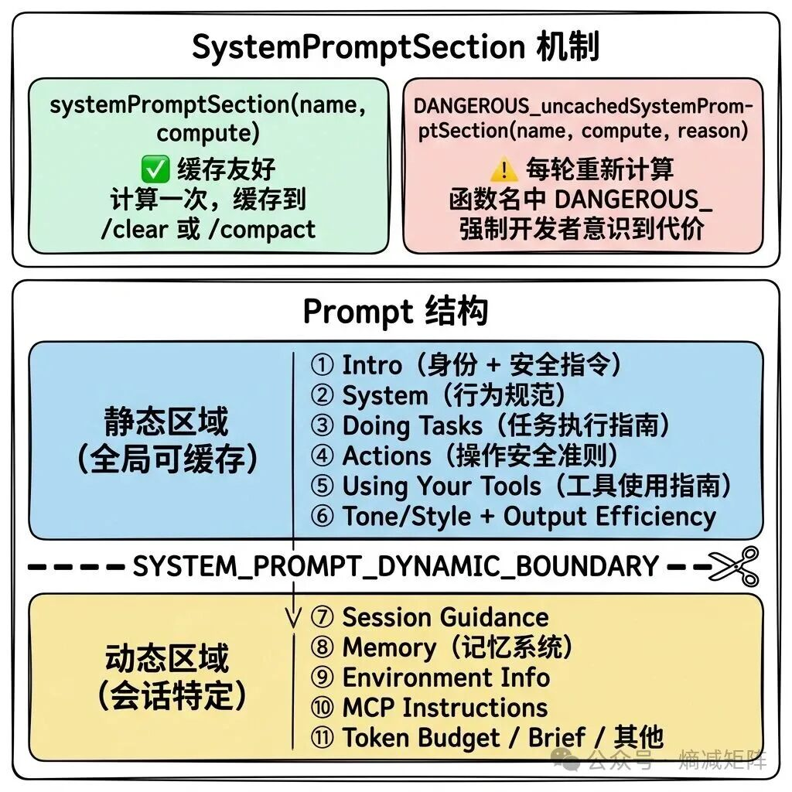
System Prompt 分段缓存架构
SYSTEM_PROMPT_DYNAMIC_BOUNDARY 标记将 prompt 分为两个缓存域：边界之前的静态区域使用 scope: 'global' 级别的缓存（跨所有用户共享），边界之后的动态区域不能跨用户缓存。在大规模部署中，全局缓存意味着所有用户的第一轮对话都能命中同一份缓存的静态 prompt 前缀——直接降低 API 成本和首次响应延迟。
DANGEROUS_uncachedSystemPromptSection 的命名是刻意的——它强制开发者在每次使用时提供 _reason 参数解释为什么必须破坏缓存。这是一种"代码即文档"的设计：函数签名本身就是一个审查机制。
6.2 静态区域：agent 的"宪法"
静态区域定义了 agent 的核心行为规范，几个值得深入理解的设计决策：
最小化原则（Doing Tasks 段落）：多条规则反复强调"不要过度"——不要添加未被要求的功能、不要为假设的未来需求设计、不要创建一次性的抽象。原文："Three similar lines of code is better than a premature abstraction." 这不是风格偏好，而是对 LLM 已知行为模式的工程化对策——模型倾向于"过度工程化"，需要明确的约束来抑制。
授权不具有传递性（Actions 段）："A user approving an action once does NOT mean that they approve it in all contexts." 这防止了模型从一次批准中过度泛化——用户允许了一次 git push 不意味着以后所有 git push 都自动允许。
内部/外部差异化：Anthropic 内部用户看到额外的指令，包括更严格的注释规范（"Default to writing no comments"）和诚实报告要求。注释提到这是针对内部评估中发现的 29-30% 虚假声明率（Capybara v8）的对策。
工具使用优先级（Using Your Tools 段落）：指导模型优先使用专用工具而非 Bash——Read 代替 cat、Edit 代替 sed、Glob 代替 find。这不仅是用户体验考虑（专用工具的输出更容易审查），也是安全考虑（专用工具有内置的权限检查，Bash 的权限检查要复杂得多）。
6.3 动态区域：会话特定的上下文注入
CLAUDE.md 注入（src/context.ts）：系统从项目目录向上遍历，收集所有层级的 CLAUDE.md 文件，合并后注入到 userContext 中。--bare 模式跳过自动发现，但仍尊重 --add-dir 显式指定的目录——"bare 意味着跳过我没要求的东西，不是忽略我要求的东西"。
CLAUDE.md 的内容还被缓存到 bootstrap/state.ts 的 cachedClaudeMdContent 字段，供 auto 模式的分类器读取。这打破了一个潜在的循环依赖：yoloClassifier → claudemd → filesystem → permissions → yoloClassifier。
Git 状态注入：系统在会话开始时并行获取 5 项 git 信息（当前分支、主分支、status、最近 5 条 commit、用户名），注入到 systemContext 中。status 输出超过 2000 字符时截断，并提示模型用 BashTool 获取完整信息。这是一个"给模型足够的上下文做初始判断，但不浪费 token 在可能不需要的细节上"的设计。
MCP 指令增量注入：每个连接的 MCP 服务器可以提供 instructions 字段。isMcpInstructionsDeltaEnabled 控制是否只在 MCP 服务器变化时重新注入（增量模式），避免每轮都重复相同的指令。
6.4 上下文管理：多层压缩策略
随着对话越来越长，上下文窗口成为稀缺资源。Claude Code 实现了四层压缩策略，从轻到重：
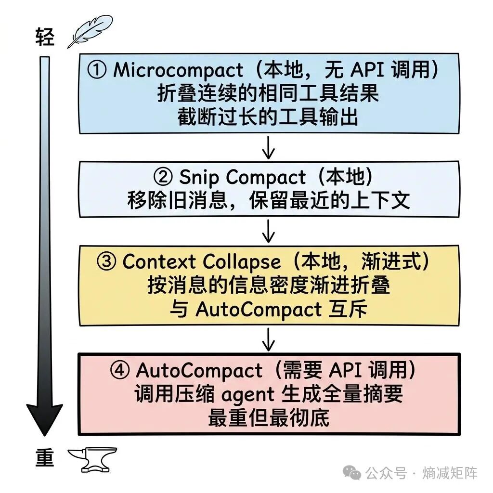
四层压缩策略
AutoCompact 的摘要 prompt 是一个精心设计的指令，要求保留 9 类信息：用户请求和意图、关键技术概念、文件和代码片段、错误和修复过程、问题解决过程、所有用户消息（原文强调"ALL user messages that are not tool results"）、待办任务、当前工作、下一步。
特别值得注意的是"所有用户消息"这个要求——这是对 LLM 压缩时容易丢失用户反馈的工程化对策。如果压缩后丢失了"用户说不要用 Redux"这条消息，模型可能在后续对话中又引入 Redux。
压缩后的重建阶段也很关键：系统会重新注入最多 5 个关键文件的内容（每个最多 5000 tokens）和 skill 指令（最多 25000 tokens）。这确保了压缩后模型仍然能"看到"最重要的文件，而不是只有一个抽象的摘要。
Context Collapse 与 AutoCompact 的互斥设计：当 Context Collapse 启用时，proactive AutoCompact 被抑制。原因是 AutoCompact 的"全量摘要"会摧毁 Collapse 保留的细粒度上下文。Collapse 是渐进式的——它按消息的重要性逐步折叠，保留更多原始信息。两者不能同时工作，系统选择更精细的策略。
七、终端 UI：自研 React 终端渲染引擎
文件：
src/ink/（20,000 行，90 个文件）、src/state/（~1,190 行）、src/screens/
Claude Code 的终端界面是一个完整的 React 应用——用 <Box> 和 <Text> 描述界面，框架负责计算布局、生成 ANSI 序列、diff 优化输出。项目使用的是 Ink 的深度 fork，重建了几乎所有核心子系统。
7.1 渲染管线：五个阶段
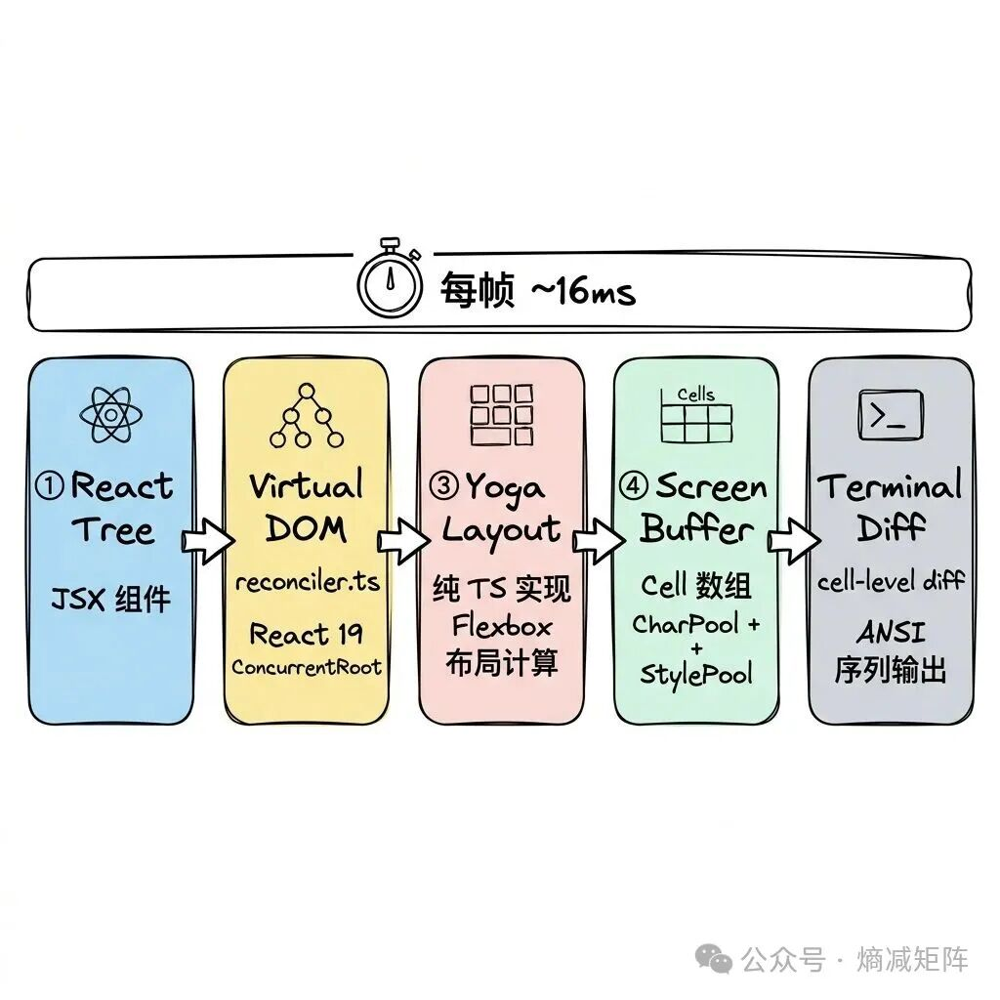
终端 UI 渲染管线
React Reconciler（reconciler.ts）：使用 react-reconciler 创建自定义 React renderer，将 React 元素映射到终端 DOM 节点。<Box> → ink-box（有 Yoga 节点），<Text> → ink-text（有 Yoga 节点 + 文本测量函数），嵌套 Text → ink-virtual-text（无 Yoga 节点，纯样式容器）。使用 ConcurrentRoot 模式支持 React 19 并发特性。
纯 TS Yoga 布局：原版 Ink 使用 WASM Yoga，Claude Code 用纯 TypeScript 重写。优势：无 WASM 加载延迟（原版需要 await loadYoga()）、无线性内存增长问题、调试更容易。通过 LayoutNode 抽象层与具体实现解耦——如果未来需要替换 Yoga，只需提供新的 LayoutNode 实现。
Screen Buffer 的三个对象池：
- •
CharPool：字符串驻留池。ASCII 字符走 Int32Array 快速路径（O(1) 索引），非 ASCII 走 Map。Cell 存储charId（整数）而非字符串，blit 时直接拷贝 ID
- •
StylePool：ANSI 样式驻留池。transition(fromId, toId)方法缓存样式转换字符串——两个样式之间的 diff 只计算一次，后续帧直接查表
- •
HyperlinkPool：OSC 8 超链接驻留池
三个池每 5 分钟重置一次，防止长会话中无限增长。重置时通过 migrateScreenPools 将活跃 cell 的引用迁移到新池。
7.2 关键优化技术
Blit 优化：如果一个节点的 dirty 标记为 false 且位置/尺寸未变，直接从上一帧的 Screen 复制该区域的 cell，跳过整个子树的遍历。这使得稳态帧（spinner 旋转、时钟更新）的渲染成本与变化区域成正比，而非整个屏幕。
DECSTBM 硬件滚动：当 ScrollBox 的 scrollTop 变化时，用终端硬件滚动（CSI top;bot r + CSI n S）代替重写整个滚动区域。先在 prev.screen 上模拟 shift，这样 diff 循环只发现滚入的新行。
同步更新：在支持 DEC 2026 的终端上，整个输出包裹在 BSU/ESU（Begin/End Synchronized Update）中，确保原子更新——终端在收到 ESU 前不会渲染中间状态，消除闪烁。
Double Buffering：维护 frontFrame（当前显示）和 backFrame（下一帧渲染目标），每帧渲染后交换。帧调度通过 lodash throttle 实现，间隔 16ms（60fps），leading + trailing 模式。
行缓存：writeLineToScreen 通过 charCache 缓存每行的解析结果——大多数行在帧间不变，命中缓存后直接读取预计算的 styleId、width、hyperlink，跳过 ANSI 解析。
7.3 事件系统
事件系统对标浏览器的 capture/bubble 模型。Dispatcher 类与 React 的调度器集成——键盘/点击事件获得 DiscreteEventPriority（立即处理），resize/scroll 获得 ContinuousEventPriority（可以被合并）。
支持的事件类型：键盘输入（KeyboardEvent）、鼠标点击（ClickEvent）、焦点变化（FocusEvent）、终端焦点（TerminalFocusEvent）、终端 resize（TerminalEvent）。焦点管理通过 focus.ts 实现 tab 导航和焦点陷阱。
7.4 状态管理
src/state/ 实现了一个轻量级的状态管理系统。AppState 使用 DeepImmutable 品牌类型确保不可变性，包含 50+ 个字段。Store 提供简单的 getState() / setState() / subscribe() 接口，通过 React Context 注入组件树。
没有使用 Redux/Zustand——对于终端应用，一个简单的 immutable store + React Context 已经足够。onChangeAppState 处理状态变更的副作用（如权限模式切换时的 UI 更新）。
八、MCP 集成：标准化的外部工具接入
文件：
src/services/mcp/（核心client.ts3348 行、config.ts1578 行）、src/tools/MCPTool/
8.1 四层架构
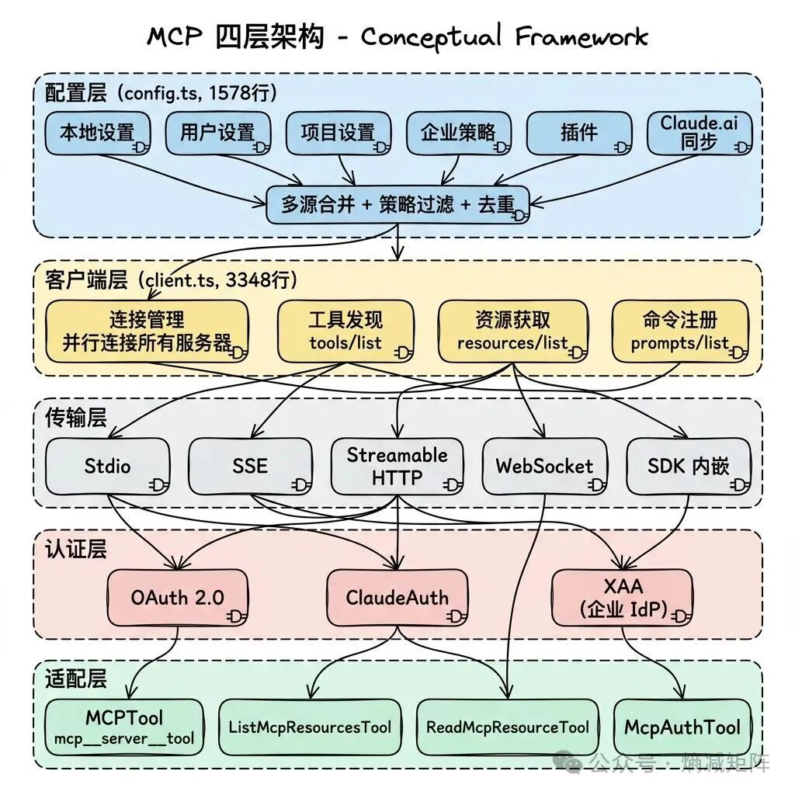
MCP 四层架构
8.2 关键设计决策
多源配置合并：MCP 服务器配置从 6 个来源合并。企业策略可以通过 allowlist/denylist 限制哪些 MCP 服务器可用。dedupClaudeAiMcpServers 处理 Claude.ai 同步的服务器与本地配置的去重——同名服务器优先使用本地配置。
工具适配：每个 MCP 服务器的工具被转换为内部 Tool 对象，名称格式 mcp__<serverName>__<toolName>。适配器处理类型转换（MCP 的 JSON Schema → 内部的 Zod schema）、权限集成（复用内部权限检查）、错误处理（MCP 协议错误 → 用户友好的错误消息）。
动态刷新：工具发现结果缓存在 AppState.mcp 中，通过 refreshTools() 在 agent loop 的每轮迭代中更新。这让新连接的 MCP 服务器在下一轮可用，无需重启会话。
认证流程：McpAuthTool 让模型可以在对话中触发认证流程——当 MCP 服务器返回认证错误时，模型可以调用 McpAuthTool 引导用户完成 OAuth 流程，然后重试原始操作。
九、设计启发与反思
9.1 值得学习的设计模式
AsyncGenerator 作为核心抽象：整个 agent loop、子 agent 执行、工具执行都基于 AsyncGenerator。这个选择带来了背压控制、自然的取消语义、流式组合能力。如果你在构建 agent 系统，AsyncGenerator 比回调或 Promise 链更适合作为消息流的核心抽象。
Fail-closed 安全默认：所有安全相关的默认值都是最保守的。新工具忘记声明 isConcurrencySafe 不会导致并发 bug，忘记声明 isReadOnly 不会导致权限绕过。这个原则值得在任何涉及安全的系统中采用。
编译时消除 vs 运行时判断：feature() 宏让同一份代码库同时服务内部和外部用户，未启用的功能在 bundle 中完全不存在。这比运行时 if-else 更安全（不可能意外启用）、更高效（减少 bundle 大小）、更易审计（grep 就能找到所有 feature gate）。
Prompt Cache 感知的架构设计：从 system prompt 的分段缓存、到工具集的分区排序、到 fork subagent 的消息构建——整个系统的多个层次都在为 prompt cache 命中率优化。这说明在大规模 LLM 应用中，cache 不是事后优化，而是需要从架构层面考虑的一等公民。
压缩 prompt 的"反遗忘"设计：要求保留"所有用户消息"和"直接引用最近对话"，这是对 LLM 压缩时容易丢失细节的工程化对策。如果你在构建长对话系统，压缩策略的设计需要考虑 LLM 的信息丢失倾向。
9.2 值得商榷的地方
全局状态的广泛使用：bootstrap/state.ts 包含 200+ 个字段的全局状态对象，注释中有 "DO NOT ADD MORE STATE HERE" 的警告。这说明团队意识到了问题但还没有找到更好的替代方案。对于一个 51 万行的项目，依赖注入或模块化状态管理可能更可维护。
权限系统的认知负担：8 种来源、5 种模式、3 种匹配模式、多层评估管线——对用户来说理解和配置这个系统有一定门槛。不过考虑到安全性的重要性，这种复杂度可能是必要的代价。规则遮蔽检测是缓解这个问题的一个好尝试。
BashTool 的复杂度集中：18 个文件、8 层安全检查、~500 行只读白名单——BashTool 承担了过多的安全职责。一个可能的改进方向是将安全检查抽象为独立的"安全策略引擎"，让 BashTool 只负责命令执行，安全判断由策略引擎统一处理。
9.3 如果重新设计
- 1. 声明式权限策略：当前的权限系统是命令式的（代码中的 if-else 链）。一个声明式的策略引擎（类似 OPA/Rego）可能更容易理解、审计和扩展。
- 2. 渐进式上下文管理：当前的压缩是"全量摘要"或"不压缩"的二选一。一个更精细的方案是按消息的"信息密度"渐进式淘汰——最近的消息保留原文，较早的消息保留摘要，更早的只保留关键事实。Context Collapse 功能似乎正在朝这个方向发展。
- 3. 工具结果的结构化存储：当前工具结果以文本形式存储在消息中，压缩时容易丢失结构。如果用结构化格式存储，压缩 agent 可以更精确地保留关键信息。
- 4. 模块化构建：将工具系统、权限系统、UI 层拆分为独立的包，通过依赖注入组合。Claude Agent SDK 已经在朝这个方向发展——"我们把 Claude Code 的 agent loop、system prompt、工具、权限系统拆出来，打包成 SDK"。
附录：关键文件索引
| 模块 | 核心文件 | 行数 |
|---|---|---|
| Agent Loop | src/QueryEngine.ts , src/query.ts | 3,024 |
| 工具编排 | src/services/tools/StreamingToolExecutor.ts , toolExecution.ts | 2,275 |
| 工具抽象 | src/Tool.ts , src/tools.ts | 1,181 |
| BashTool | src/tools/BashTool/ (18 files) | ~5,000 |
| 权限核心 | src/utils/permissions/permissions.ts | ~1,400 |
| 权限规则 | src/utils/permissions/ (24 files) | ~5,000 |
| AgentTool | src/tools/AgentTool/ (20 files) | ~6,000 |
| Swarm | src/utils/swarm/ (22 files) | ~5,000 |
| System Prompt | src/constants/prompts.ts | 914 |
| 压缩 | src/services/compact/ (11 files) | 3,960 |
| Ink 渲染引擎 | src/ink/ (90 files) | 19,842 |
| MCP 客户端 | src/services/mcp/client.ts | 3,348 |
| MCP 配置 | src/services/mcp/config.ts | 1,578 |
| 全局状态 | src/bootstrap/state.ts | ~800 |
| 应用状态 | src/state/AppStateStore.ts | ~400 |
归属：[[02-输入/按主题/AI与效率/_index|AI与效率]]